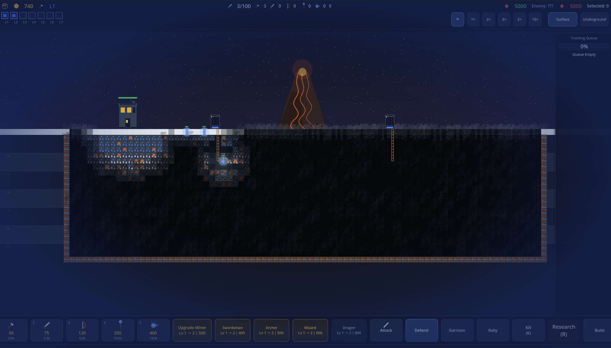

Proposed treatment
Current blue vignette
Proposed treatment
MineAttack visual iteration
Replace the flat blue perimeter bubble with layered, wind-driven snow, patchy whiteout, and readable shelter pockets.
